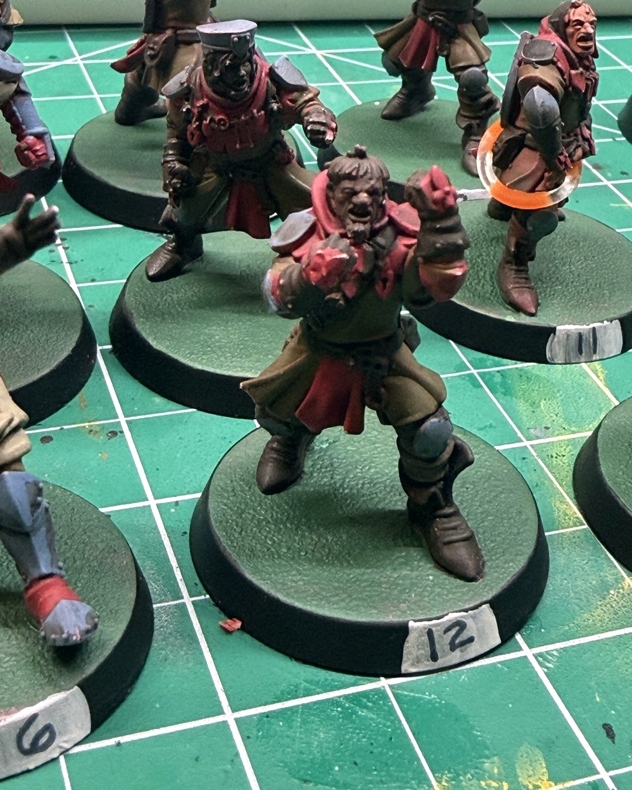
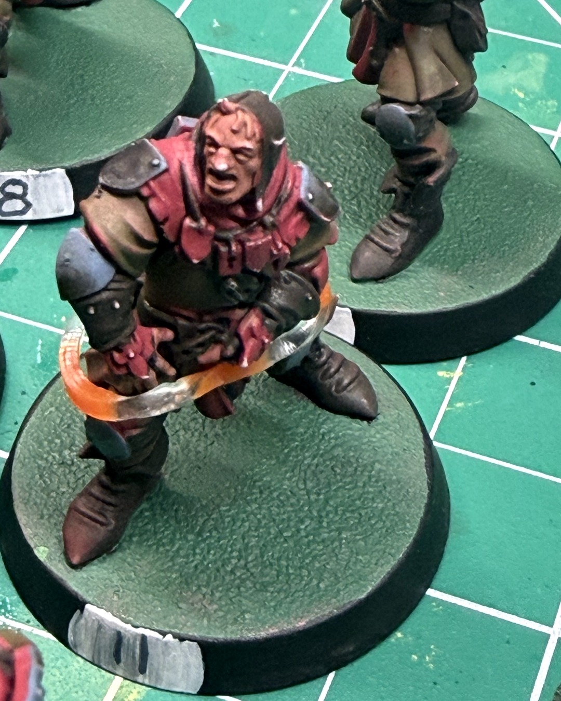
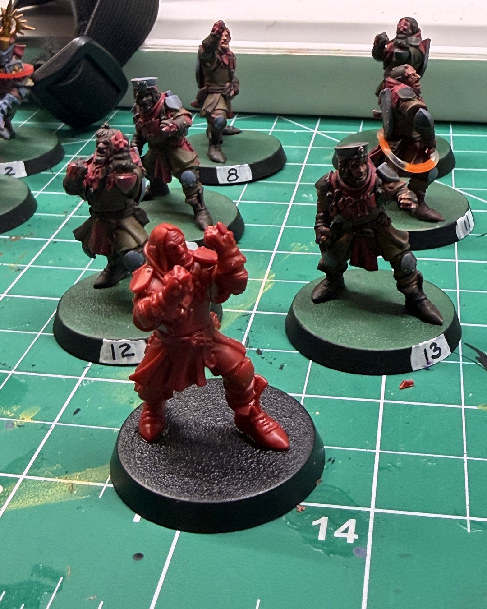

Blood Bowl Oct 14, 2026
Roster repair and a backup backup squire
After last game's carnage, the Holy Hand Grenadiers needed some roster repair 🩹
Fresh numbers are on the rims, and the bases are a lot more polished than the old pinkish ones. They're not done yet, but they're getting there.
And standing front and center in bare red plastic is the backup backup squire I just built. He doesn't know what happened to the last guy, and I'm not telling him.
Links in bio for the Blood Bowl Third Season core box. They're affiliate links, so using them supports me 🙌
@warhammerofficial
#bloodbowl #bretonnian #miniaturepainting #warhammercommunity #paintingwarhammer
The full guide
- Hobby slump or setup problem? Four ways to restart momentum →Sometimes it's motivation. More often the paints are buried and the next step is fuzzy. Make starting smaller.